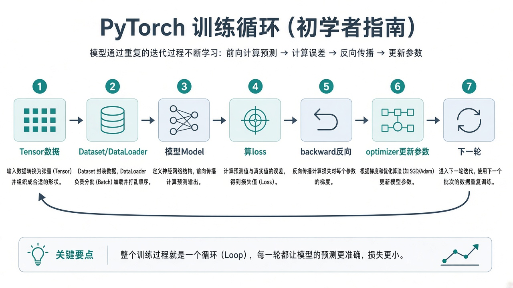

0. 怎么学 · 前置
请先完成 01、02、03。本章会反复用到：venv、NumPy shape、train/test、loss、学习率、epoch/batch。
- 建议目录：
D:\shenji-python\ch04 - 每一小节跑通再往下；训练循环是核心，前面都为它服务
- 先 CPU 跑通，再折腾 GPU，避免同时踩两个坑
建议时间：安装 0.5–2 小时（视网络）+ 正文练习 8–14 小时。
1. PyTorch 是什么
PyTorch 是常用的深度学习框架：用张量存数据与参数，用自动求导算梯度，用 nn 搭模型，用优化器更新参数。

和 NumPy 很像，但多了：在 GPU 上算、记录运算以便反传、一整套神经网络积木。
2. 安装与验证
先激活 venv，再安装。CPU 版对入门够用：
cd D:\shenji-python
.\.venv\Scripts\Activate.ps1
python -m pip install -U pip
python -m pip install torch torchvision --index-url https://download.pytorch.org/whl/cpu有 NVIDIA 显卡？到 pytorch.org/get-started/locally 按提示生成安装命令（选好 CUDA 版本）。装完用下面验证。
python -c "import torch; print(torch.__version__); print('cuda:', torch.cuda.is_available())"- 能打印版本号 → 安装成功
cuda: False在 CPU 入门完全正常
翻车：没进 venv 就装；或官方命令与本机 CUDA 不匹配。先保证 import torch 成功。
完成 0 / 2 步
3. 张量 Tensor
张量 ≈ 带自动求导能力的多维数组。先当「会 GPU、会反传的 NumPy」用。
import torch
x = torch.tensor([1.0, 2.0, 3.0])
y = torch.zeros(2, 3)
z = torch.randn(4, 5) # 标准正态随机
print(x.shape, y.shape, z.shape)
print(x.dtype)
a = torch.tensor([[1., 2.], [3., 4.]])
b = torch.tensor([[1., 0.], [0., 1.]])
print(a @ b) # 矩阵乘
print(a * b) # 对应元素乘- 深度学习里批量数据常见 shape：
(batch, features)或图像(batch, C, H, W) - 和 NumPy 互换：
torch.from_numpy(arr)/t.numpy()（注意共享内存等细节，入门先知道可以转）
动手：造 (8, 3) 的随机张量，打印 shape，再对第 0 维求 mean。
4. 自动求导直觉
第三章手写了 dw、db。参数一多就写不动。PyTorch 在正向计算时记账，loss.backward() 自动填 .grad。
import torch
w = torch.tensor(2.0, requires_grad=True)
x = torch.tensor(3.0)
y = w * x
loss = (y - 10) ** 2
loss.backward()
print(w.grad) # loss 对 w 的梯度- 需要学的参数：
requires_grad=True（nn.Parameter默认就有） - 每次更新前通常
optimizer.zero_grad()，清掉上一步梯度，避免累加
入门不必手推复杂网络的反传；要会：forward 算 loss → backward → step 这三拍。
5. Dataset 与 DataLoader
Dataset：描述「第 i 条样本是什么」。
DataLoader：按 batch 取数、可打乱、多进程加载（入门先会用）。
import torch
from torch.utils.data import Dataset, DataLoader, TensorDataset
X = torch.randn(100, 3)
y = torch.randn(100, 1)
ds = TensorDataset(X, y)
loader = DataLoader(ds, batch_size=16, shuffle=True)
for xb, yb in loader:
print(xb.shape, yb.shape) # 例如 (16,3) (16,1)
break自己的数据：继承 Dataset，实现 __len__ 与 __getitem__。先用 TensorDataset 跑通流程。
坑：shuffle=True 用于训练集；测试集一般 False，方便复现与对照。
6. 用 nn.Module 定义模型
import torch.nn as nn
class MLP(nn.Module):
def __init__(self):
super().__init__()
self.net = nn.Sequential(
nn.Linear(3, 16),
nn.ReLU(),
nn.Linear(16, 1),
)
def forward(self, x):
return self.net(x)
model = MLP()
x = torch.randn(8, 3)
print(model(x).shape) # (8, 1)__init__：搭积木（层）forward：定义数据怎么流过- 调用
model(x)等于走forward
nn.Linear(in, out) 就是一层全连接：内部是矩阵乘 + 偏置，和第三章直线拟合是亲戚。
7. loss 与优化器
import torch.nn as nn
from torch.optim import Adam
model = MLP()
criterion = nn.MSELoss() # 回归常用
optimizer = Adam(model.parameters(), lr=1e-3)
pred = model(torch.randn(8, 3))
target = torch.randn(8, 1)
loss = criterion(pred, target)
print(loss.item())- 分类常用
nn.CrossEntropyLoss()（注意输入 logits 与标签 shape，下章项目再细抠） model.parameters()：告诉优化器「动哪些旋钮」loss.item()：取出 Python 数字，方便记录曲线
8. 标准训练循环（背下来）
for epoch in range(num_epochs):
model.train()
total = 0.0
for xb, yb in loader:
optimizer.zero_grad()
pred = model(xb)
loss = criterion(pred, yb)
loss.backward()
optimizer.step()
total += loss.item() * len(xb)
avg = total / len(loader.dataset)
print(epoch, avg)zero_grad：清空旧梯度forward：得到预测loss：算有多错backward：算梯度step：按学习率更新参数
model.train() / model.eval()：切换训练/评估模式（Dropout、BatchNorm 等会受影响）。评估时再加：
model.eval()
with torch.no_grad():
# 这里算验证 loss / 准确率，不反传
...9. 画曲线与改超参
每个 epoch 记录 avg loss，用 Matplotlib 画图（第二章已会）。然后故意改：
lr=1e-2vs1e-4epochs=20vs100batch_size=8vs64
对照第三章：太大的 lr 会抖或飞；太小降不动。把现象写进笔记。
10. 保存与加载模型
# 推荐：保存参数字典
torch.save(model.state_dict(), "model.pt")
# 加载
model2 = MLP()
model2.load_state_dict(torch.load("model.pt", map_location="cpu"))
model2.eval()加载后结构要与保存时一致（同样的 MLP 定义）。只存 state_dict 比存整个对象更常见、更好控。
11. 设备 CPU / GPU
device = torch.device("cuda" if torch.cuda.is_available() else "cpu")
model = MLP().to(device)
# 每个 batch：
xb = xb.to(device)
yb = yb.to(device)模型与输入要在同一设备，否则会报错。没有 GPU 就全程 CPU，逻辑相同，只是更慢。
12. 完整最小示例（请敲一遍）
文件：ch04/train_min.py。假数据回归：学一个简单映射。
import torch
import torch.nn as nn
from torch.utils.data import TensorDataset, DataLoader
from torch.optim import Adam
import matplotlib.pyplot as plt
torch.manual_seed(0)
N, D = 256, 3
X = torch.randn(N, D)
true_w = torch.tensor([1.5, -2.0, 0.5])
y = (X * true_w).sum(dim=1, keepdim=True) + 0.1 * torch.randn(N, 1)
loader = DataLoader(TensorDataset(X, y), batch_size=32, shuffle=True)
class MLP(nn.Module):
def __init__(self):
super().__init__()
self.net = nn.Sequential(nn.Linear(3, 16), nn.ReLU(), nn.Linear(16, 1))
def forward(self, x):
return self.net(x)
model = MLP()
opt = Adam(model.parameters(), lr=1e-2)
loss_fn = nn.MSELoss()
history = []
for epoch in range(40):
model.train()
total = 0.0
for xb, yb in loader:
opt.zero_grad()
loss = loss_fn(model(xb), yb)
loss.backward()
opt.step()
total += loss.item() * len(xb)
history.append(total / N)
if epoch % 10 == 0:
print(epoch, history[-1])
torch.save(model.state_dict(), "ch04_model.pt")
plt.figure()
plt.plot(history)
plt.xlabel("epoch")
plt.ylabel("loss")
plt.grid(True)
plt.tight_layout()
plt.savefig("ch04_loss.png", dpi=150)
print("saved ch04_model.pt / ch04_loss.png")完成 0 / 4 步
13. 常见报错（先看这些）
- shape 不对 / matmul size：打印
xb.shape、pred.shape、yb.shape - Expected all tensors on same device：模型和数据都
.to(device) - grad 相关奇怪行为：是否忘了
zero_grad；评估是否包了torch.no_grad() - CUDA out of memory：减小 batch_size；或先回 CPU
- 加载失败：网络结构是否与保存时一致
过关自检
完成 0 / 10 项
全部勾完，再进入下一章「做一个小项目」。
用 AI 学这一章（Cursor / Codex）
我在学深基课第四章（PyTorch 入门）。
环境：Windows，torch 版本 ____，cuda=____。
请一次只改一处；先问 shape，再给补丁。
代码：
（粘贴相关函数，不要整文件灌满）
报错全文：
（粘贴）
我打印的 shape：
xb=____ pred=____ yb=____
请：1）判断问题类型；2）最小修改；3）用一句话解释为何 shape/设备必须如此。